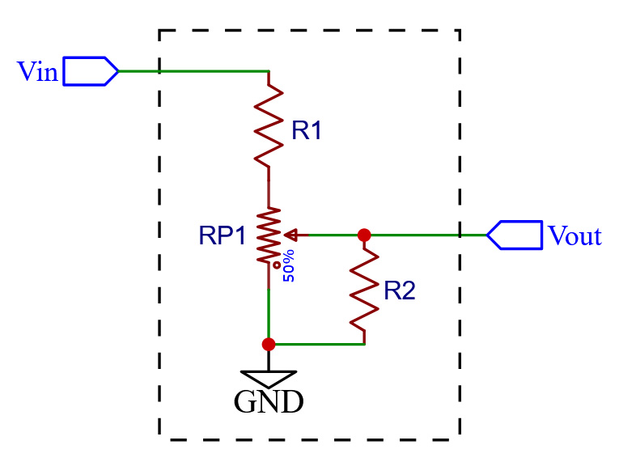

Circuit Diagram

← place schematic here →
Circuit Parameters
Potentiometer RP1
kΩ
Max Output Loudness
100%
R1 (loudness)
kΩ
R2 (shape)
kΩ
Knob Position
Output Signal
Output: —%
Amplitude @ Knob Position
All reference curves are normalized to meet the actual circuit curve at 100%.
Logarithmic
Audio taper a=1
Audio taper a=2
Linear
This circuit
Position
Level Meters
Input
—
dB
Output
—
dB re max
Loudness @ Knob Position
Same normalization as amplitude chart. Loudness ≈ amplitude^0.6 (Stevens' power law).
Logarithmic
Audio taper a=1
Audio taper a=2
Linear
This circuit
Position